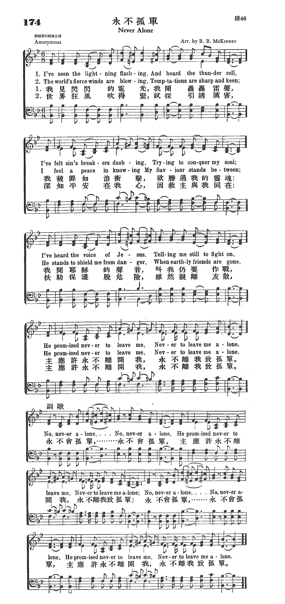

1227 391 Never Alone (I've seen the lightning flashing) 永不孤单
|
|
|
|
1 I’ve seen the lightning flashing
And heard the thunder roll,
I’ve felt sin’s breakers dashing,
which tried to conquer my soul;
I’ve heard the voice of my Savior,
He bid me still fight on:
He promised never to leave me,
Never to leave me alone.
Refrain:
No, never alone,
No, never alone;
He promised never to leave me,
Never to leave me alone:
No, never alone,
No, never alone:
He promised never to leave me,
Never to leave me alone.
2 The world’s fierce winds are blowing–
Temptation’s sharp and keen;
I have a peace in knowing
My Savior stands between;
He stands to shield me from danger
When all my friends are gone:
He promised never to leave me,
Never to leave me alone. [Refrain]
3 When in affliction’s valley
I tread the road of care,
My Savior helps me carry
My cross so heavy to bear;
Though all around me is darkness
And earthly joys are flown,
My Savior whispers His promise:
Never to leave me alone. [Refrain]
4 He died on Calv'ry's mountain,
For me they pierced His side,
For me He opened that fountain,
The crimson, cleansing tide;
For me He’s waiting in glory
Upon His heavenly throne:
He promised never to leave me,
Never to leave me alone. [Refrain]
Source: One
Lord, One Faith, One Baptism: an African American ecumenical hymnal #101 |
永不孤單 Never Alone
我見閃閃的電光，我聞轟轟雷聲，
我被罪如浪衝擊，欲勝過我的靈魂；
我聞耶穌的聲音，叫我仍要作戰，
主應許永不離開我，永不離我致孤單。
世界狂風吹更急，試探和引誘厲害，
深知平安在我心，因救主與我同在；
扶助保護脫危險，雖然親離友散。
主應許永不離開我，永不離我致孤單。
（副歌）
永，不會孤單，永，不會孤單，
主應許永不離開我，永不離我致孤單。
永，不會孤單，永，不會孤單，
主應許永不離開我，永不離我致孤單。 |
|

https://www.iwtfly.com/di-174-shou-yong-bu-gu-dan.html

https://hymnary.org/hymn/FHOP/page/286 |
|
|
|
 永不孤單 Never Alone
永不孤單 Never Alone
-
hymn, "No, Never Alone,"
永不孤單 Never Alone
我見閃閃的電光，我聽見轟轟雷聲，
我被罪如浪衝擊，欲勝過我的靈魂；
我聞耶穌的聲音，叫我仍要作戰，
主應許永不離開我，永不離我致孤單。
世界狂風不住吹，試探和引誘厲害，
深知平安在我心，因救主與我同在；
扶助保護脫危險，雖然親離友散。
主應許永不離開我，永不離我致孤單。
（副歌）
不，永不孤單，不，永不孤單，
主應許永不離開我，永不離我致孤單。
不，永不孤單，不，永不孤單，
主應許永不離開我，永不離我致孤單。
 (請點耳機收聽)
(請點耳機收聽)
多少時候我們也像雅各一樣，孤單寂寞，孑然一身。如果我們沒有感到神仍與我們同在，則是何等的淒涼無助；如果我們能意識到這是單獨與神親近的時刻，則又是何等的寶貴。
聖經中告訴我們有許多被神重用的人，都在單獨和神親近時，得到啟示、託付或勝利。 讓我們珍惜這與神獨處的片刻。
「永不孤單」歌詞的作者軼名。 由麥堅尼（B. B. McKinney, 見一月廿六日）譜曲。
茂奧玨（Audrey Mieir）根據馬太福音28:20 「凡我所吩咐你們的，都教訓他們遵守，我就常與你們同在，直到世界的末了。」作了一首短歌「永不再孤單」（I’ll
Never Be Lonely Again），其歌詞如下：
永不再孤單
I’ll
Never Be Lonely Again
我永不再寂寞孤單，永不孤單，
因我開心門迎接主進來。
故我就擦乾眼淚，忘卻那懼怕悲哀，
我永不再寂寞孤單，永不孤單。
永不孤單，永不孤單。
你永不再寂寞孤單，永不孤單，
若你開心門迎接主進來。
故你就擦乾眼淚，忘卻那懼怕悲哀，
你永不再寂寞孤單，永不孤單。
永不孤單，永不孤單。
(請點耳機收聽)
中英文聖詩集參考
英文歌名 Never
Alone
聖詩 174
http://www.hymncompanions.org/Feb/27/stream.php
"NEVER ALONE"
"…I will never leave thee, nor forsake thee" (Heb. 13:5)
INTRO.:
A
song which reminds us that Jesus has promised never to leave us nor to forsake
us is "Never Alone" (#488 in Sacred
Selections for the Church). Most modern books identify the text as
anonymous and the tune as as coming from an unknown source of the nineteenth
century. The Praise
and Worship Hymnal of the Lillenas Publishing Co. has a song
by Eliza Edmunds Hewitt copyrighted in 1898 with this title and the following
first stanza:
"’Fear not, I am with thee’–Blessed golden ray,
Like a star of glory Lighting up my way!
Through the clouds of midnight This bright promise shown:
‘I will never leave thee, Never will leave thee alone."
The tune, which is practically identical to the one in modern books is
attributed to C. F. O. and said to be arranged by William James Kirkpatrick.
Cyberhymnal, citing Time
Magazine (July 29, 1929) as it source, attributes the words
that are in most modern books to Ludie Carrington Day Pickett, who was born on
Mar. 31, 1867, at Bayou Tunica, LA. A teacher at Asbury College in Wilmore, KY,
she was president of the Kentucky chapter of the Women’s Christian Temperance
Union. The date given for the song is 1897. Her other works include Careful
Cullings for Children, co-authored with her husband L. L. Pickett, in 1903.
She died, probably at Wilmore, KY, on Mar. 1, 1953. If the 1897 date for the
song is correct, it may well be that Hewitt’s version was in imitation of Mrs.
Pickett’s. Some sources identify the tune as an English melody.
Many arrangements have been made of the song. Ira Hoffman arranged it for the
Evangelical Publishing Co. of Chicago, IL, in Best
Hymns No. 3. Baylus Benjamin McKinney arranged it for the Sunday School
Board of the Southern Baptist Convention in Broadman’s The
Broadman Hymnal and Christian
Praise, also in Benson’s All
American Church Hymnal. Fred Jacky arranged it as found in Standard
Publishing’s Favorite
Hymns Revised, Tabernacle Publishing Co.’s Tabernacle
Hymns, the Sword of the Lord’s Soul
Stirring Songs and Hymns, and Aaron Weaver’s Zion’s
Praises. Eldon Burkwall arranged it for Singspiration’s Great
Hymns of the Faith. Uncredited arrangements appear in Tennessee
Music’s 1951 Church
Hymnal, Lexicon Music’s 1976 New
Church Hymnal, Tempo Music’s 1996 Rejoice
Hymnal, the Old
School Hymnal‘s 1983 Eleventh Edition, and North Valley’s 1999 Songs
and Hymns of Revival. Another version with words by V. A. White beginning,
"Lonely? no, not lonely, While Jesus standeth by," and a similar tune, copyright
in 1896 by George Elderkin, appeared in The
Redeemer’s Praise published by Elderkin.
As a result of all these arrangements, several variations in wording are found
in different sources. Among hymnbooks published by members of the Lord’s church
during the twentieth century for use in churches of Christ, the song appeared in
the 1917 Selected
Revival Songs published by F. L. Rowe, in a 1900 arrangement
of the words by Palmer Hartsough and the music by James Henry Fillmore; the 1940 Complete
Christian Hymnal edited by Marion Davis, in an arrangement by
J. E. Thomas; and the 1965 Christian
Hymnsongs and the 1973 Great
Inspirational Songs both edited by Albert E. Brumley. Today,
it may be found in Sacred
Selections in an arrangement by Vernie O. Fossett, copyrighted
in 1949 by Stamps Baxter Music and Printing Co., which is also in the 2007 Sacred
Songs of the Church edited by William D. Jeffcoat.
The song seeks to bring comfort to the Christian’s mind with the knowledge that
Jesus will never leave us.
I. Stanza 1 tells us that He will not leave us in life’s storms
"I’ve seen the lightning flashing, And heard the thunder roll;
I’ve felt sin’s breakers dashing, Trying to conquer my soul.
I’ve heard the voice of my Savior Telling me still to fight on;
He promised never to leave me, Never to leave me alone."
A. The flash of lightning and the roll of thunder are often used to symbolize
the trials and tribulations of life, as a ship would experience a storm upon the
sea: Ps. 107:25-27
B. Thus, the breakers dashing would represent Satan’s attempts to conquer our
souls: 1 Pet. 5:8
C. Yet, Jesus will remain with us telling us to fight on and not grow weary or
lose heart: Gal. 6:9
II. Stanza 2 says that He will not leave us in times of temptation
"The world’s fierce winds are blowing Temptations sharp and keen;
I feel a peace in knowing My Savior stands between.
He stands to shield me from danger When earthly friends are gone;
He promised never to leave me, Never to leave me alone."
A. As long as we live in this life there will be temptations sharp and keen:
Jas. 1:14-15
B. However, Jesus will stand between us and temptation to give us peace: Phil.
4:7
C. His purpose in this is to shield us from danger and make a way of escape: 1
Cor. 10:13
III. Stanza 3 says that He will not leave us when in affliction
"When in affliction’s valley I’m treading the road of care,
My Savior helps me to carry My cross when heavy to bear.
My feet, entangled with briars, (Are) ready to cast me down;
My Savior whispers His promise, Never to leave me alone."
A. Everyone experiences a certain amount of affliction in this life, including
Christians: 1 Thess. 1:6
B. However, Jesus will help us to carry the cross that He has commanded us to
bear: Matt. 16:24
C. Even when are feet are entangled with briars and ready to cast us down, He
promises that He will be with us: Matt. 28:20
IV. Stanza 4 says that He will not leave us in sin
"He died for me on the mountain, For me they pierced His side;
For me He opened the fountain, The crimson, cleansing tide.
For me He’s waiting in glory, Seated upon His throne;
He promised never to leave me, Never to leave me alone."
A. We know that He does not want to leave us in sin because He died for us on
the mountain of Calvary: 1 Cor. 15:3
B. As a result, He opened a fountain that is for our cleansing from sin: Zech.
13:1
C. Thus, He is now waiting in glory, seated upon His throne to make
intercession for us: Heb. 7:25
V. Stanza 5 says that He will not leave us in eternal punishment
"He gives me the sweet promise That He will come again.
And when He reigns in glory, And I to heaven attain,
I shall in that dear country Be numbered with His own,
And live with Him forever, Never, no, never alone."'
A. One way that Jesus is with us is through His sweet promise that He will come
again: Jn. 14:1-3
B. And He promises that just as He sat down with His Father on His throne,
those who overcome will sit with Him on His throne: Rev. 3:21
C. Therefore, we have the hope of escaping eternal punishment and being
numbered with the righteous in that dear country: Rev. 22:1-5
CONCL.:
The chorus re-emphasizes the fact that Jesus has promised never to leave us as
long as we serve Him faithfully to the best of our ability.
"No, never alone! No, never alone!
He promised never to leave me, Never to leave me alone.
No, never alone! No, never alone!
He promised never to leave me, Never to leave me alone."
All Christians face various trials, temptations, afflictions, and other
difficulties in this life. However, it is a source of great comfort and strength
to know that our Savior, who died to save us and wants us to go to heaven with
Him, will leave us "Never Alone."
https://hymnstudiesblog.wordpress.com/2009/04/16/quotnever-alonequot/
Words: Ludie Carrington Day Pickett (b. Mar. 31. 1867; d. Mar. 1, 1953)
Music: composer unknown (Fred Jackey is listed as the arranger in some books)
Links:
Wordwise Hymns
The Cyber Hymnal
Note: This gospel song was published in 1897. Some hymn books call both the
words and music anonymous, but others identify the two individuals noted above.
Fred Jackey is an otherwise unknown musician. For more about Mrs. Pickett, see
the Wordwise Hymns link.The wording I’ve used below is slightly different from
what is found in the Cyber Hymnal, but not in any material way.
The message is still the same, and it’s an encouraging one. At times the refrain
has been used as a chorus, on its own.God did not mean human beings to be alone
(Gen. 2:18). Though there are times when this happens, and even is necessary, we
have been made to relate to others and live in community.
However, having a number of people nearby is no guarantee we will not be
lonely. A person can be lonely in a crowd. To have real friendship and
companionship, there have to be mutual concern and compassion, a sharing of
life’s pains and pleasures.At times there is a loneliness in service for God.
Sometimes, this is because those around us are opposing what we do.
Other times, it is because coworkers and friends–for whatever reason–have
abandoned us.
¤ Godly Job suffered alone on the ash heap. His wife had told him to “curse God
and die” (Job 1:9). And the “friends” who came to comfort him turned on him in
the end, believing he must have done some great wickedness to be experiencing
what he was (e.g. Job 4:7; cf. 16:2).
¤ Elijah experienced feelings of loneliness as he fled from the murderous wrath
of Queen Jezebel (I Kgs. 19:10).
¤ The Lord Jesus experienced it too. First, many in the multitudes that flocked
after Him drifted away (Jn. 6:66-69).
Later, even His disciples abandoned Him in fear (Matt. 26:56), including Peter,
who’d said he never would (Matt. 26:33, 69-75).
¤ Near the end of his life, Paul reported to Timothy that Luke was the only one
who had stayed with him–i.e. visited him in his lonely prison cell (II Tim.
4:9-12).
Though such times are a reality for many faithful servants of God, we have the
repeated assurance that God will never abandon His own. The Lord Jesus said,
“Lo, I am with you always, even to the end of the age” (Matt. 28:20).
“He [God] Himself has said, ‘I will never leave you nor forsake you’” (Heb.
13:5).
The Apostle Paul raises the question, “Who shall separate us from the love of
Christ?” His answer is that nothing can or will (Rom. 8:35-39).CH-1) I’ve seen
the lightning flashing, and heard the thunder roll.
I’ve felt sin’s breakers dashing, which tried to conquer my soul.
I’ve heard the voice of my Saviour, He bid me still to fight on.
He promised never to leave me, never to leave me alone!No, never alone, no never
alone,
He promised never to leave me,
Never to leaven me alone;
No, never alone, no never alone.
He promised never to leave me,
Never to leave me alone.CH-4) He died on Calvary’s mountain, for me they piercèd
His side.
For me He opened that fountain, the crimson, cleansing tide.
For me He’s waiting in glory, upon His heav’nly throne–
He promised never to leave me, never to leave me alone!With regard to the
refrain of the song, some books change a line, possibly to avoid some of the
repetition. Lines two and three are made to say:He promised never to leave me,
He’ll claim me for His own;This is true, but I would have preferred to see that
in the present tense:
“He claims me for His own.” The Bible says, “Beloved, now we are children
of God” (I Jn. 3:2; cf. Gal. 3:26). The Lord considers us “My sheep” (Jn. 10:14,
26).As to the Lord abiding with those who belong to Him, Paul’s own testimony
bears this out. In his prison cell he wrote to Timothy:“At my first defense no
one stood with me, but all forsook me.
May it not be charged against them. But the Lord stood with me and strengthened
me, so that the message might be preached fully through me, and that all the
Gentiles might hear” (II Tim. 4:16-17).
And it should be added that believers ought to be the Lord’s ministers in
visiting and encouraging those who are lonely and facing various trials (Matt.
25:36; cf. Acts 20:35; II Cor. 1:3-5; II Tim. 1:16-17; Jas. 2:15-16; III Jn.
1:5-8).
Questions:
1) What are the unique hurts experienced in the loneliness of ministry? And its
unique comforts?
2) Is there some lonely person you are aware of that would benefit from a visit
or an act of kindness from you today?Links:
Wordwise Hymns
The Cyber Hymnal
https://wordwisehymns.com/2014/01/20/never-alone/